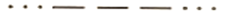
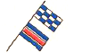

СИГНАЛИ ЗА БЕДСТВИЕ
|
| 191. Чувате експлозивни сигнали през интервал от около 1мин. Какво означава това?: |
|
Кораб е загубил управление Кораб поставя кабели Танкер е направил разлив Кораб търпи бедствие и се нуждае от помощ |
| документ регламентиращ правилния отговор: GOLREG ANNEX IV (a) |
| 192. Чувате непрекъснат звуков сигнал, подаван от апарат за мъгла. Какво означава това?: |
|
Кораб търпи бедствие и се нуждае от помощ Сигнал за обръщане на внимание Военен кораб извършва маневра Кораб е загубил управление |
| документ регламентиращ правилния отговор: GOLREG ANNEX IV (b) |
| 193. Виждате червени звездни ракети през кратки интервали от време. Какво означава това?: |
|
Сигнал за обръщане на внимание Кораб обслужва водолази Кораб е загубил управление Кораб търпи бедствие и се нуждае от помощ |
| документ регламентиращ правилния отговор: GOLREG ANNEX IV (c) |
| 194. Чувате по радиотелеграфа или друга сигнална система (SOS) по Морзовата азбука:  |
|
Кораб търпи бедствие и се нуждае от помощ Кораб обслужва водолази Кораб е загубил управление Сигнал за обръщане на внимание |
| документ регламентиращ правилния отговор: GOLREG ANNEX IV (d) |
| 195. Чувате по радиотелефона думата "Мейдей": |
|
Кораб обслужва водолази Кораб търпи бедствие и се нуждае от помощ Нужен ми е буксир Кораб е загубил управление |
| документ регламентиращ правилния отговор: GOLREG ANNEX IV (e) |
| 196. По Международния код за сигналите виждате флаговете NC (Новембер-Чарли): |
|
Кораб е загубил управление Кораб обслужва водолази Кораб търпи бедствие и се нуждае от помощ Нужен ми е буксир |
| документ регламентиращ правилния отговор: GOLREG ANNEX IV (f) |
| 197. Виждате квадратен флаг с поставена над или под него сфера или предмет, подобен на сфера: |
|
Кораб обслужва водолази Корабът ми е под карантина Нужен ми е буксир Кораб търпи бедствие и се нуждае от помощ |
| документ регламентиращ правилния отговор: GOLREG ANNEX IV (g) |
| 198. По Международния код за сигналите виждате флаговете NC (Новембер-Чарли):  |
|
Кораб обслужва водолази Кораб, поставящ кабели Кораб търпи бедствие и се нуждае от помощ Нужен ми е буксир |
| документ регламентиращ правилния отговор: GOLREG ANNEX IV (f) |
| 199. Виждате излизащи от някакви съдове пламъци на палубата от друг кораб: |
|
Кораб обслужва водолази Кораб, поставящ кабели Кораб търпи бедствие и се нуждае от помощ Нужен ми е буксир |
| документ регламентиращ правилния отговор: GOLREG ANNEX IV (h) |
| 200. Виждате червена парашутна ракета или фалшфайер: |
|
Кораб обслужва водолази Нужен ми е буксир Кораб, поставящ кабели Кораб търпи бедствие и се нуждае от помощ |
| документ регламентиращ правилния отговор: GOLREG ANNEX IV (i) |